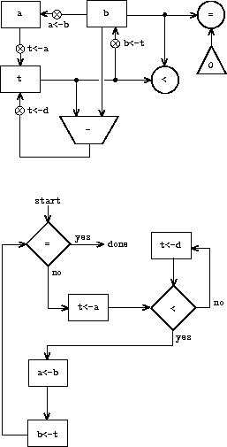

寄存器机器
Table of Contents
前面研究了计算和用Lisp过程描述计算的相关问题，提出了几个 解释器 求值模型：
- 代换 模型
- 环境 模型
- 元循环 模型
元循环模型表现出求值过程的许多细节，但仍然有一些遗漏，主要是没解释 Lisp 系统里的基本控制动作。例如： 在子表达式求出值之后，如何把值送给使用值的表达式？ 为什么有些递归过程会产生迭代型计算过程（只需常量空间），而另一些却产生递归型计算过程（需要线性以上的空间）？
原因： 求值器本身是 Lisp 程序 ，继承并利用了基础系统的结构。要进一步理解 Lisp 求值器的控制，必须转到更低的层面，研究更多实现细节
寄存器机器
寄存器机器的功能是 顺序执行一条条指令 ， 操作一组存储单元 （寄存器）。一般包含：
- 数据通路 ：寄存器和操作
- 控制器 ：确定操作顺序
GCD 算法：
(define (gcd a b) (if (= b 0) a (gcd b (remainder a b))))
执行本算法的机器必须维护 a 和 b 的轨迹，假定两个值存于 寄存器 a 和 b 。所需操作：
- 判断 b 是否 0，计算 a 除以 b 的余数（假定有计算设备）
- 每一次循环迭代需要同时更新 a 和 b。由于一条简单指令只能更新一个寄存器，因此引进了 辅助寄存器 t
它的 数据通路 如图：

为了寄存器机器能正确工作，必须 正确控制 其中各 按钮的开闭顺序 。下图是 GCD 机器的 控制器 ，用流程图表示：
- 方框是动作
- 菱形框是判断
控制按箭头方向运行，进入判断后的流向由数据通路图中的检测决定
- 控制到达 done 时工作结束，寄存器 a 里存放着计算结果

寄存器机器描述语言
用这种图形描述很小的机器还可以，但难用于描述大型机器
为方便使用，可以考虑一种描述寄存器机器的文本语言
一种设计是提供两套描述方式，分别用于描述 数据通路 和 控制器 ：
- 数据通路描述： 寄存器 和 操作
- 寄存器命名
- 寄存器赋值的 按钮命名
- 受其控制的数据传输的 数据源 （寄存器/常量/操作）。也需给 操作命名 ，并说明其输入
- 控制器是 指令序列 ，加上一些 表示控制入口点 的 标号
- 指令可为：
- 数据通路的一个 按钮 ： 指定 寄存器赋值 动作
- test 指令：完成 检测
- branch 指令: 条件转跳 指令，基于前面检测结果
- 检测为 真 ： 跳转 到 指定标号 的指令
- 检测为 假 ： 继续 下一条指令
- goto 指令： 无条件跳转 到 指定标号
- 标号：branch 和 goto 的 目标
- 指令可为：
GCD 语言描述
数据通路：
(data-paths (registers ((name a) (buttons ((name a<-b) (source (register b))))) ((name b) (buttons ((name b<-t) (source (register t))))) ((name t) (buttons ((name t<-r) (source (operation rem)))))) (operations ((name rem) (inputs (register a) (register b))) ((name =) (inputs (register b) (constant 0)))))
控制器：
(controller test-b ; label (test =) ; test (branch (label gcd-done)) ; conditional branch (t<-r) ; button push (a<-b) ; button push (b<-t) ; button push (goto (label test-b)) ; unconditional branch gcd-done) ; label
这种描述很难读：要理解控制器里的指令，必须仔细对照数据通路的按钮和操作的名字
一种改进是把 数据通路描述融入控制器描述 ，在指令里直接说做什么
(controller test-b (test (op =) (reg b) (const 0)) (branch (label gcd-done)) (assign t (op rem) (reg a) (reg b)) (assign a (reg b)) (assign b (reg t)) (goto (label test-b)) gcd-done)
改造后语言清晰多了，但还有缺点，如： 1. 较罗嗦，如果指令里多次提到某数据通路元素，就要多次写出其完整描述（上例简单，无此情况）。重复出现使实际数据通路结构不 够清晰，看不清有多少寄存器操作按钮，及其互连关系 2. 虽然指令用 Lisp 表达式表示，但实际上这里只能写合法指令
虽然有这些缺点，下面还是准备用这套寄存器机器语言
在这里比起数据通路的内部结构来说我们更关心控制器的
反过来如果设计一台真实的计算机，最核心的部分却是如何设计数据通路
GCD 机器扩展
作为例子，现在想修改前面的 GCD 机器，使得能给它 输入 想求 GCD 的数，并能 打印 出计算结果
这里不准备研究读入或输出的实现
只假定有两个基本操作：
- read : 产生可存入寄存器的值 ，值来自机器之外
- print : 给环境产生某种效果
- 图形上给 print 关联一个按钮，按压导致 print 执行。指令形式：
(perform (op print) (reg a))
print 和前面讨论的操作不同，它并不会把任何的计算结果保存到寄存器 因此这里新增一个特殊的指令 perform 来标识触发 print 这样的动作
扩充后的 GCD 机器控制器的工作过程：
- 反复读入一对对数值
- 求出两个数的 GCD
- 输出
扩充后的 GCD 寄存器模型：

扩充后的 GCD 控制器指令序列：
(controller gcd-loop (assign a (op read)) (assign b (op read)) test-b (test (op =) (reg b) (const 0)) (branch (label gcd-done)) (assign t (op rem) (reg a) (reg b)) (assign a (reg b)) (assign b (reg t)) (goto (label test-b)) gcd-done (perform (op print) (reg a)) (goto (label gcd-loop)))
机器语言设计抽象
一部机器的定义总是基于一组基本操作，有些操作本身很复杂
可能考虑把 Scheme 环境提供的操作作为基本操作
基于复杂操作定义机器，可以将注意力集中到某些关键方面，隐藏不关注的细节。必要时再 基于更基本的操作构造这些操作 ，说明它们可实现。例如， GCD 机器的一个操作是计算 a 除以 b 的余数赋给 t。如果希望机器不以它作为基本操作，需考虑 基于更简单的操作计算余数 ，可以只用减法写出求余数过程：
(define (remainder n d) (if (< n d) n (remainder (- n d) d)))
可以用一个减法操作和一个比较代替前面机器里的求余数
新GCD 控制器代码（用减法实现求余）：
(controller test-b (test (op =) (reg b) (const 0)) (branch (label gcd-done)) (assign t (reg a)) rem-loop (test (op <) (reg t) (reg b)) (branch (label rem-done)) (assign t (op -) (reg t) (reg b)) (goto (label rem-loop)) rem-done (assign a (reg b)) (assign b (reg t)) (goto (label test-b)) gcd-done)
新 GCD 的数据通路和控制器：

这里是把原来的 (assign t (op rem) (reg a) (reg b)) 替换成下面的循环： rem-loop (test (op <) (reg t) (reg b)) (branch (label rem-done)) (assign t (op -) (reg t) (reg b)) (goto (label rem-loop)) rem-done
子程序
用基于更基本操作的结构代替原复杂操作后，得到的控制器将更复杂
下面希望能做某种安排，使相同的计算不必重复构造（以简化机器结构）
如果机器两次用 GCD，分别算 a 与 b 和 c 与 d 的 GCD，数据通路将包含两个 GCD 块，控制器也包含两段类似代码 :-(
gcd-1 (test (op =) (reg b) (const 0)) (branch (label after-gcd-1)) (assign t (op rem) (reg a) (reg b)) (assign a (reg b)) (assign b (reg t)) (goto (label gcd-1)) after-gcd-1 gcd-2 (test (op =) (reg d) (const 0)) (branch (label after-gcd-2)) (assign s (op rem) (reg c) (reg d)) (assign c (reg d)) (assign d (reg s)) (goto (label gcd-2)) after-gcd-2
两台 GCD 的机器模型如下：

多次出现同样部分不经济
现在考虑如何只用一个 GCD 部件实现
计算 c 和 d 的GCD时，寄存器中 a 和 b 里 的值没有用（如有用可以把它们移到其他寄存器），因此可以修改机器：
- 计算 c 和 d 的GCD时，先把c 和 d 的值分别移到 a 和 b
- 用第一个GCD通路完成计算
这就删去了一个算GCD 的通路，控制器代码如下：
gcd-1 (test (op =) (reg b) (const 0)) (branch (label after-gcd-1)) (assign t (op rem) (reg a) (reg b)) (assign a (reg b)) (assign b (reg t)) (goto (label gcd-1)) after-gcd-1 ;; 这里把求 GCD 的数据 c 和 d 移入 a 和b gcd-2 (test (op =) (reg b) (const 0)) (branch (label after-gcd-2)) (assign t (op rem) (reg a) (reg b)) (assign a (reg b)) (assign b (reg t)) (goto (label gcd-2)) after-gcd-2
现在两个代码片段基本相同，只是入口和出口标号不同
这里还有一些重复的控制器代码，下面考虑如何消去它们
- 调用在进入 GCD 代码前把一个 continue 寄存器 设为不同值
- 在 GCD 代码出口根据 continue 寄存器 跳到正确执行位置
得到的代码如下所示，其中只有一段计算 GCD 的代码：
gcd (test (op =) (reg b) (const 0)) (branch (label gcd-done)) (assign t (op rem) (reg a) (reg b)) (assign a (reg b)) (assign b (reg t)) (goto (label gcd)) gcd-done (test (op =) (reg continue) (const 0)) (branch (label after-gcd-1)) (goto (label after-gcd-2)) ;; 在第一次调用 gcd 之前，把 continue 寄存器设置为 0 (assign continue (const 0)) (goto (label gcd)) after-gcd-1 ;; 在第二次调用 gcd 之前，把 continue 寄存器设置为 1 (assign continue (const 1)) (goto (label gcd)) after-gcd-2
这种技术可满足本程序需要（一段代码，正确返回）
但如果程序里有许多GCD 计算，代码会很复杂，难写也难维护
需要考虑更一般的实现模式
新的思路是基于 代码指针 ，也就是在寄存器里 保存控制信息 ：
- 用一个寄存器 continue 保存 返回地址 ，GCD 代码最后按它的内容跳转
- 扩充 goto 指令功能：
- 参数是 标号 ：（直接）跳
- 参数是 寄存器 ： 跳到寄存器中保存的标号 （寄存器间接跳）
gcd (test (op =) (reg b) (const 0)) (branch (label gcd-done)) (assign t (op rem) (reg a) (reg b)) (assign a (reg b)) (assign b (reg t)) (goto (label gcd)) gcd-done (goto (reg continue)) ;; 间接跳转到寄存器中保存的标号 ;; continue 寄存器保存标号 (assign continue (label after-gcd-1)) (goto (label gcd)) after-gcd-1 (assign continue (label after-gcd-2)) (goto (label gcd)) after-gcd-2
这样就实现了子程序和子程序调用
多个子程序调用相互无关时可以共用一个 continue 寄存器
如果子程序里还有子程序调用，就需要多个continue 寄存器，否则会丢失外层调用的返回标号
递归
考虑阶乘过程：
(define (factorial n) (if (= n 1) 1 (* (factorial (- n 1)) n)))
粗看这和计算 gcd 类似：
(define (gcd a b) (if (= b 0) a (gcd b (remainder a b))))
但两者有重要的区别：
- 最后一次调用 gcd 的结果就是最终需要的结果
- 阶乘子问题的结果并不是原问题的结果，返回后还要乘以 n
如采用前面设计，减值后求 n-1 的阶乘，原来的 n 值就丢了，没办法再找回来求乘积
另外做一个机器解决子问题也不行：
子问题还可能有子问题，初始时 n 为任意整数，因此子问题可以有任意层嵌套，
有穷个部件无法构造出所需要的机器
计算阶乘需要做一种安排，使所有计算能通过同一机器完成。
表面看需要嵌套的无穷多部机器，但任何时刻实际上只用一部，因此可以在遇到子问题时 挂起当前计算 ，解决子问题后回来继续原计算。注意：
- 进入 子问题时的状态与原问题不同 （如 n 变成 n-1）
- 为了以后能继续做中断的计算，必须 保存状态 （当时n 的值）
还有控制问题，子程序结束后返回哪里？ continue 保存返回位置，但是递归使用同一机器时又需要用这个寄存器，赋以新值就会丢掉将来要返回的位置
由于不知道递归的深度，需要准备保存任意多个寄存器值：
- 这些值的 使用顺序 与 保存顺序 相反， 后存先用
- 用一个 后进先出 数据结构 栈
为保证正确返回，调用前也要把 continue 的值 入栈
阶乘递归机器
假定有栈操作 save / restore ，就可以重用同一阶乘机器，完成所有子阶乘计算：
(controller (assign continue (label fact-done)) ; 设置最终返回的执行地址 fact-loop (test (op =) (reg n) (const 1)) (branch (label base-case)) ;; 为了执行递归，保存 continue 和 n 的值 (save continue) (save n) (assign n (op -) (reg n) (const 1)) (assign continue (label after-fact)) ;; fact-loop 子程序返回后恢复，使计算可以继续执行 after-fact (goto (label fact-loop)) after-fact (restore n) (restore continue) (assign val (op *) (reg n) (reg val)) ; val now contains n(n - 1)! (goto (reg continue)) ; return to caller 持续调用 after-fact 最后一次调用 fact-done base-case (assign val (const 1)) ; base case: 1! = 1 (goto (reg continue)) ; return to caller 递归调用前保存返回的位置 after-fact fact-done)
原则上说，实现递归计算需要无穷机器。这里用有穷机器实现
但其中还是有无穷的东西：栈的存储空间没有上界
实际机器里栈的规模有限，这就限制了机器递归的深度，也限制了能求解的阶乘的大小
处理递归的一般方法：
- 用一部常规寄存器机器加一个 栈
- 遇到递归调用时，把从 子程序返回 后还 需要的寄存器的值 存 入栈
- 特别是必须保存当时continue 寄存器的值，将来返回一定需要
可以把所有子程序调用都统一到这一模式 前面说的在子程序里调用子程序的麻烦也一起解决了
斐波纳契数递归机器
考虑双递归，以过程 fib 为例：
(define (fib n) (if (< n 2) n (+ (fib (- n 1) (fib (- n 2))))))
斐波纳契数计算可以实现为寄存器机器：两个递归调用都用同一机器完成。调用前设置 continue 寄存器，指明完成计算后返回的位置
(controller (assign continue (label fib-done)) fib-loop (test (op <) (reg n) (const 2)) (branch (label immediate-answer)) ;; set up to compute Fib(n - 1) (save continue) (assign continue (label afterfib-n-1)) (save n) ; save old value of n (assign n (op -) (reg n) (const 1)); clobber n to n - 1 (goto (label fib-loop)) ; perform recursive call afterfib-n-1 ; upon return, val contains Fib(n - 1) (restore n) (restore continue) ;; set up to compute Fib(n - 2) (assign n (op -) (reg n) (const 2)) (save continue) (assign continue (label afterfib-n-2)) (save val) ; save Fib(n - 1) (goto (label fib-loop)) afterfib-n-2 ; upon return, val contains Fib(n - 2) (assign n (reg val)) ; n now contains Fib(n - 2) (restore val) ; val now contains Fib(n - 1) (restore continue) (assign val ; Fib(n - 1) + Fib(n - 2) (op +) (reg val) (reg n)) (goto (reg continue)) ; return to caller, answer is in val immediate-answer (assign val (reg n)) ; base case: Fib(n) = n (goto (reg continue)) fib-done)
调用 afterfib-n-1 前必须保存 n 寄存器，因为计算 fib(n -2) 需要 n
调用 afterfib-n-2 前必须保存 val 寄存器，此时 val 寄存器中的值是 fib(n -1)
因为计算完 fib(n - 2) 以后需要 fib(n - 1) 做加法
指令总结
寄存器机器指令总结，其中 <inputi> 可以是 (reg <register-name>) 或者 (const <constant-value>) ：
(assign <register-name> (reg <register-name>)) (assign <register-name> (const <constant-value>)) (assign <register-name> (op <operation-name>) <input1> ... <inputn>) (perform (op <operation-name>) <input1> ... <inputn>) (test (op <operation-name>) <input1> ... <inputn>) (branch (label <label-name>)) (goto (label <label-name>))
将 标号存入寄存器 和 通过寄存器间接跳转 ：
(assign <register-name> (label <label-name>)) (goto (reg <register-name>))
压栈和出栈指令：
(save <register-name>) (restore <register-name>)
前面的 <constant-value> 都是 数值 ，还可能用到 字符串 、 符号 和 表常量 ：
字符串：(const "abc")
符号：(const abc)
列表：(const (a b c))
空表：(const ())
寄存器机器模拟器
为了更好的理解前面设计的寄存器机器，必须测试机器是否如预计地运行
有一种方式就是如上面一样用手工来模拟控制器动作，但哪怕是之前那些最简单的程序，这项工作仍然是非常单调乏味的！
下面开发的寄存器模拟器是一个Scheme 程序，有 4 个 接口过程 ：
根据被 模拟机器的描述 （ 寄存器 、 操作 和 控制器 ）构造出一个可以 模拟执行的机器模型
(make-machine <register-names> <operations> <controller>)
把一个 值 存入 指定的 寄存器
(set-register-contents! <machine-model> <register-name> <value>)
取出一个寄存器的内容
(get-register-contents <machine-model> <register-name>)
让机器开始运行
(start <machine-model>)
GCD 模拟器实例
make-machine 参数：
- 寄存器表： ( a b t)
- 操作表：每个子表给出
- 操作名 : rem
- 实现操作的 Scheme 过程: remainder
- 控制器代码
(define gcd-machine (make-machine '(a b t) (list (list 'rem remainder) (list '= =)) '(test-b (test (op =) (reg b) (const 0)) (branch (label gcd-done)) (assign t (op rem) (reg a) (reg b)) (assign a (reg b)) (assign b (reg t)) (goto (label test-b)) gcd-done)))
计算：设置寄存器，然后启动
(set-register-contents! gcd-machine 'a 206) ;; done (set-register-contents! gcd-machine 'b 40) ;; done (start gcd-machine) ;; done (get-register-contents gcd-machine 'a) ;; => 2
这个计算会比 用 Scheme实现的 gcd 过程慢得多，因为模拟底层机器语言（类似assign语句），需要许多非常复杂的操作才行
机器模型
机器模型是 包含局部变量 的 过程 ，采用 消息传递 技术
- make-new-machine: 构造出所有寄存器机器都有的 公共部分 ，包括
- 若干内部 寄存器
- 一个 栈
- 一个 执行器
- 扩充该模型：
- 加入 具体机器 的 寄存器 和 操作
- 用一个 汇编器 把 控制器表 翻译成 易于解释的 指令序列 并 安装到机器 里
(define (make-machine register-names ops controller-text) (let ((machine (make-new-machine))) ;; 构造出一台通用的寄存器机器 ;; 加入具体机器的寄存器 (for-each (lambda (register-name) ((machine 'allocate-register) register-name)) register-names) ;; 安装机器的操作 ((machine 'install-operations) ops) ;; 汇编器翻译成指令，并安装到机器里 ((machine 'install-instruction-sequence) (assemble controller-text machine)) machine))
寄存器
寄存器：有 局部状态 的 过程 ，可以 保存 值、 访问 或 修改
(define (make-register name) (let ((contents '*unassigned*)) (define (dispatch message) (cond ((eq? message 'get) contents) ((eq? message 'set) (lambda (value) (set! contents value))) (else (error "Unknown request -- REGISTER" message)))) dispatch))
访问寄存器的过程：
(define (get-contents register) (register 'get)) (define (set-contents! register value) ((register 'set) value)) ;; (define test-register (make-register 'test)) ;; (get-contents test-register) ;; *unassigned* ;; (set-contents! test-register 10) ;; (get-contents test-register) ;; 10
栈
栈和寄存器类似，也是有局部状态的过程：
- make-stack : 创建栈，接收消息：
- push : 压栈
- pop : 出栈
- initialize : 初始化
(define (make-stack) (let ((s '())) (define (push x) (set! s (cons x s))) (define (pop) (if (null? s) (error "Empty stack -- POP") (let ((top (car s))) (set! s (cdr s)) top))) (define (initialize) (set! s '()) 'done) (define (dispatch message) (cond ((eq? message 'push) push) ((eq? message 'pop) (pop)) ((eq? message 'initialize) (initialize)) (else (error "Unknown request -- STACK" message)))) dispatch))
访问栈的过程：
(define (pop stack) (stack 'pop)) (define (push stack value) ((stack 'push) value)) ;; (define test-stack (make-stack)) ;; (pop test-stack) ;; Empty stack -- POP ;; (push test-stack 1) ;; (pop test-stack) ;; 1 ;; (pop test-stack) ;; Empty stack -- POP ;; (push test-stack 2) ;; ;; (test-stack 'initialize) ;; done ;; (pop test-stack) ;; Empty stack -- POP
基础机器
基础机器模型的 局部状态变量 包含：
- 一个寄存器表：register-table
- 指令寄存器： pc
- 标志寄存器：flag
- 一个栈：stack
- 一个操作列表： the-ops
- 初始化栈操作：initialize-stack
- 一个初始为空的指令列表：the-instruction-sequence
基础机器模型的包含的过程：
- allocate-register : 添加新的寄存器到寄存器表
- lookup-register: 在寄存器表中获取对应寄存器的值
- execute: 执行指令：
- 取 pc 指向的指令
- 如果 pc 中的指令不为空
- 执行指令：
- 执行结束改变 pc 寄存器的值
- branch 和 goto 指令会直接改变 pc 寄存器中的值
- 其他情况简单的使 pc 指向指令列表中的下一个元素
- 递归调用 execute
- 如果 pc 中的指令为空：结束执行
- 如果 pc 中的指令不为空
- 取 pc 指向的指令
(define (make-new-machine) (let ((pc (make-register 'pc)) ;; 指令寄存器 (flag (make-register 'flag)) ;; 标志寄存器 (stack (make-stack)) ;; 栈 (the-instruction-sequence '())) ;; 指令列表 (let ((the-ops ;; 操作列表 (list (list 'initialize-stack (lambda () (stack 'initialize))))) (register-table ;; 寄存器列表 (list (list 'pc pc) (list 'flag flag)))) ;; 添加新的寄存器 (define (allocate-register name) (if (assoc name register-table) (error "Multiply defined register: " name) (set! register-table (cons (list name (make-register name)) register-table))) 'register-allocated) ;; 从寄存器列表获得特定寄存器 (define (lookup-register name) (let ((val (assoc name register-table))) (if val (cadr val) (error "Unknown register:" name)))) ;; 执行指令 (define (execute) (let ((insts (get-contents pc))) ;; 获得 pc 寄存器的值 (if (null? insts) 'done (begin ((instruction-execution-proc (car insts))) (execute))))) (define (dispatch message) (cond ((eq? message 'start) ;; 启动机器 (set-contents! pc the-instruction-sequence) ;; pc 寄存器指向指令列表 (execute)) ;; 执行指令 ((eq? message 'install-instruction-sequence) ;; 安装指令列表 (lambda (seq) (set! the-instruction-sequence seq))) ((eq? message 'allocate-register) allocate-register) ;; 添加寄存器 ((eq? message 'get-register) lookup-register) ;; 查询寄存器 ((eq? message 'install-operations) ;; 安装操作过程 (lambda (ops) (set! the-ops (append the-ops ops)))) ((eq? message 'stack) stack) ;; 返回栈 ((eq? message 'operations) the-ops) ;; 返回操作列表 (else (error "Unknown request -- MACHINE" message)))) dispatch)))
基本机器的一些接口过程：
;; 启动机器 (define (start machine) (machine 'start)) ;; 获得寄存器中的值 (define (get-register-contents machine register-name) (get-contents (get-register machine register-name))) ;; 设置寄存器中的值 (define (set-register-contents! machine register-name value) (set-contents! (get-register machine register-name) value) 'done) ;; 取指定寄存器信息 (define (get-register machine reg-name) ((machine 'get-register) reg-name))
汇编器
最重要的部分是一个 汇编器 程序，它把给定的机器 控制器 翻译为一个 指令序列 ，每条指令带着相应的 执行过程
与分析求值器类似，但这里处理的是寄存器机器语言
虽然不知道表达式值和寄存器内容，也可以做许多分析和优化，如：
- 用 指向寄存器对象的指针 代替 寄存器引用
- 用 指向指令序列里具体位置的指针 代替 标号引用
这和之前实现的“分析解释器”类似，都是不知道变量具体值的时候就可以做的优化（比如，避免多次分析表达式语法结构等）
生成执行过程前要确定 标号的位置 ，工作方式：
- 扫描控制器， 识别 序列里的 标号 ，构造：
- 一个 指令表
- 一个 标号位置关联表 ：把每个标号关联到指令表的一个位置
- 再次扫描控制器， 生成 并 设置 指令表 里各指令的 执行过程
接口程序
汇编程序的入口是 assemble ：
- 参数：一个 控制器代码 和一个 基本机器模型
- 返回： 可以放入机器模型 的 指令序列
(define (assemble controller-text machine) (extract-labels controller-text ;; 构造初始指令表和标号表 (lambda (insts labels) ;; 指令表，标号表作为参数 (update-insts! insts labels machine) ;; 以指令表、标号表和机器为参数，生成各条指令的执行过程加入指令表 insts))) ;; 返回指令表
构造和使用 指令表 的过程：
;; 构造指令表 (define (make-instruction text) (cons text '())) ;; 构造指令表时，执行过程暂时用一个空表，后面将填入实际执行过程 ;; 获取指令 (define (instruction-text inst) (car inst)) ;; 获得指令执行过程 (define (instruction-execution-proc inst) (cdr inst)) ;; 设置指令执行过程 (define (set-instruction-execution-proc! inst proc) (set-cdr! inst proc))
构造和查询 标号关联表 相关过程：
;; 把标号和指令做关联 (define (make-label-entry label-name insts) (cons label-name insts)) ;; 标号表项就是序对 ;; 查询某个标号关联表下某个标号对应的指令 (define (lookup-label labels label-name) (let ((val (assoc label-name labels))) (if val (cdr val) (error "Undefined label -- ASSEMBLE" label-name))))
extract-labels : 逐项检查指令表内容， 提取 其中的 标号 ：
;; 逐项检查指令表内容，提取其中的标号 ;; text: 控制器代码 ;; receive: 函数参数 (define (extract-labels text receive) (if (null? text) (receive '() '()) ;; 递归处理控制器正文序列的 cdr (extract-labels (cdr text) (lambda (insts labels) (let ((next-inst (car text))) (if (symbol? next-inst) ;; 检查 car 是否是标号 (receive insts ;; 如果是标号，加入标号项 (cons (make-label-entry next-inst insts) labels)) (receive (cons (make-instruction next-inst) insts) ;; 反之加入指令表项 labels)))))))
undate-insts! : 修改指令表。原来每个位置只有指令正文，执行过程用空表占位，现在 添加 实际的 执行过程
;;; 原来每个位置只有指令正文，执行过程用空表占位，现在加入实际的执行过程 ;;; insts: 指令表 ;;; labels: 标号关联表 ;;; machine: 机器模型 (define (update-insts! insts labels machine) (let ((pc (get-register machine 'pc)) (flag (get-register machine 'flag)) (stack (machine 'stack)) (ops (machine 'operations))) (for-each ;; 给一条指令设置执行过程 (lambda (inst) (set-instruction-execution-proc! inst (make-execution-procedure ;; 构造一条指令的执行过程 (instruction-text inst) labels machine pc flag stack ops))) insts)))
生成指令的执行过程
生成指令的执行过程的方式类似求值器的 analyze 过程：
;;; 生成一条指令的执行过程 ;;; inst: 指令 ;;; labels: 标号表 ;;; machine: 机器模型 ;;; pc: 指令寄存器 ;;; flag: 标志寄存器 ;;; stack: 栈 ;;; ops: 操作表 (define (make-execution-procedure inst labels machine pc flag stack ops) (cond ((eq? (car inst) 'assign) (make-assign inst machine labels ops pc)) ((eq? (car inst) 'test) (make-test inst machine labels ops flag pc)) ((eq? (car inst) 'branch) (make-branch inst machine labels flag pc)) ((eq? (car inst) 'goto) (make-goto inst machine labels pc)) ((eq? (car inst) 'save) (make-save inst machine stack pc)) ((eq? (car inst) 'restore) (make-restore inst machine stack pc)) ((eq? (car inst) 'perform) (make-perform inst machine labels ops pc)) (else (error "Unknown instruction type -- ASSEMBLE" inst))))
每种指令有一个执行过程的生成过程，根据具体指令的语法和意义确定
用数据抽象技术隔离指令的具体表示和对指令的操作
assign 指令
生成赋值指令的执行过程：
(define (make-assign inst machine labels operations pc) (let ((target (get-register machine (assign-reg-name inst))) ;; 从指令中取出被赋值的寄存器 (value-exp (assign-value-exp inst))) ;; 从指令中取出被赋值的值表达式 (let ((value-proc ;; 求值的执行过程 (if (operation-exp? value-exp) (make-operation-exp value-exp machine labels operations) ;; 构造一般 op 表达式的执行过程 (make-primitive-exp (car value-exp) machine labels)))) ;; 构造基本表达式的 执行过程。基本表达式包括 reg, label, const (lambda () ; assign 的执行过程 (set-contents! target (value-proc)) ;; 调用 value-proc 过程，并把结果赋值给对应的寄存器 (advance-pc pc))))) ;; pc 寄存器自增
assign 指令的辅助过程
;;; 获得 assign 指令中的寄存器表达式 (define (assign-reg-name assign-instruction) (cadr assign-instruction)) ;;; 获得 assign 指令中的赋值表达式 (define (assign-value-exp assign-instruction) (cddr assign-instruction))
通用的指令计数器的更新过程：指向指令表的下一条指令
;;; 通用的指令计数器的更新过程 (define (advance-pc pc) (set-contents! pc (cdr (get-contents pc))))
除了 goto 和 branch , 其他的指令执行过程都会使用通用的指令计数器更新过程
test 指令
- 设置flag 寄存器
- 更新 pc
;;; 生成 test 指令的执行过程 (define (make-test inst machine labels operations flag pc) (let ((condition (test-condition inst))) ;; 获得条件的求值表达式 (if (operation-exp? condition) (let ((condition-proc (make-operation-exp ;; 产生条件的求值过程 condition machine labels operations))) (lambda () (set-contents! flag (condition-proc)) ;; 调用 condition-proc 过程，把结果设置到 flag 寄存器 (advance-pc pc))) ;; 更新 pc 寄存器 (error "Bad TEST instruction -- ASSEMBLE" inst))))
test 指令的辅助过程：
(define (test-condition test-instruction) (cdr test-instruction))
branch 指令
根据 flag 更新 pc ：
;;; 生成 branch 指令的执行过程 (define (make-branch inst machine labels flag pc) (let ((dest (branch-dest inst))) ;; 获取转跳指令里的标号 (if (label-exp? dest) (let ((insts (lookup-label labels (label-exp-label dest)))) ;; 从标号表里找出标号在指令序列里的位置 (lambda () (if (get-contents flag) ;; 根据 flag 的值决定如何更新 pc (set-contents! pc insts) ;; flag 为真，则把指令寄存器更新为标号在指令序列中的位置 (advance-pc pc)))) ;; flag 为假，按照通用方式更新指令寄存器 (error "Bad BRANCH instruction -- ASSEMBLE" inst))))
branch 指令的辅助过程：
(define (branch-dest branch-instruction) (cadr branch-instruction))
注意： 1. branch 指令中只能用标号，不能用寄存器间接跳转，而 goto 指令支持寄存器间接跳转 2. branch 指令中的标号在指令序列中的位置，只会在 assemble 过程中取一次，动态执行时候不会再去取
goto 指令
goto 的特殊情况：转跳位置可能用 标号 或 寄存器 描述， 需要分别处理：
;;; 生成 goto 指令的执行过程 (define (make-goto inst machine labels pc) (let ((dest (goto-dest inst))) ;; 获取转跳指令里的目的 (cond ((label-exp? dest) ;; 标号处理类似于 branch (let ((insts (lookup-label labels (label-exp-label dest)))) (lambda () (set-contents! pc insts)))) ((register-exp? dest) ;; 寄存器间接跳转 (let ((reg (get-register machine (register-exp-reg dest)))) ;; 从机器寄存器表中获得对应的寄存器变量 (lambda () (set-contents! pc (get-contents reg))))) ;; 从寄存器变量中获得对应的值，并把值赋给指令寄存器 pc (else (error "Bad GOTO instruction -- ASSEMBLE" inst)))))
goto 指令的辅助过程：
(define (goto-dest goto-instruction) (cadr goto-instruction))
save & restore 指令
这两条指令针对特定寄存器使用栈，并更新 pc：
;;; 生成 save 指令的执行过程（寄存器中的内容压栈） (define (make-save inst machine stack pc) (let ((reg (get-register machine (stack-inst-reg-name inst)))) (lambda () (push stack (get-contents reg)) (advance-pc pc)))) ;;; 生成 restore 指令的执行过程（栈上的内容出栈到寄存器） (define (make-restore inst machine stack pc) (let ((reg (get-register machine (stack-inst-reg-name inst)))) (lambda () (set-contents! reg (pop stack)) (advance-pc pc))))
栈指令辅助过程：
(define (stack-inst-reg-name stack-instruction) (cadr stack-instruction))
perform 指令
在实际模拟中执行对应动作并更新 pc ：
;;; 为 perform 指令生成执行过程 (define (make-perform inst machine labels operations pc) (let ((action (perform-action inst))) (if (operation-exp? action) (let ((action-proc (make-operation-exp action machine labels operations))) ;; 构造 op 表达式的执行过程 (lambda () (action-proc) ;; 执行 op 表达式的执行过程 (advance-pc pc))) ;; 更新指令寄存器 pc (error "Bad PERFORM instruction -- ASSEMBLE" inst))))
perform 指令的辅助过程：
(define (perform-action inst) (cdr inst))
基本表达式执行过程
reg 、 label 或 const ，这些是基本表达式，生成相应的执行过程：
;;; 生成基本表达式的执行过程 (define (make-primitive-exp exp machine labels) (cond ((constant-exp? exp) (let ((c (constant-exp-value exp))) (lambda () c))) ;; 返回常量值 ((label-exp? exp) (let ((insts (lookup-label labels (label-exp-label exp)))) (lambda () insts))) ;; 返回标号在标号指令关联表中对应的指令 ((register-exp? exp) (let ((r (get-register machine (register-exp-reg exp)))) ;; 获取寄存器表中的对应寄存器变量 (lambda () (get-contents r)))) ;; 返回对应寄存器变量中的内容 (else (error "Unknown expression type -- ASSEMBLE" exp))))
基本表达式的语法过程：
(define (register-exp? exp) (tagged-list? exp 'reg)) (define (register-exp-reg exp) (cadr exp)) (define (constant-exp? exp) (tagged-list? exp 'const)) (define (constant-exp-value exp) (cadr exp)) (define (label-exp? exp) (tagged-list? exp 'label)) (define (label-exp-label exp) (cadr exp))
子表达式
assign 、 perform 和 test 指令的执行过程都将 机器操作 应用于 操作对象 （ reg表达式 或 const 表达式 ），这种操作的执行过程：
;;; 生成子表达式的执行过程 ;;; exp: 子表达式 (define (make-operation-exp exp machine labels operations) (let ((op (lookup-prim (operation-exp-op exp) operations)) ;; 从操作表中查找对应操作名的函数过程，比如 + , = , remainder等 (aprocs (map (lambda (e) (make-primitive-exp e machine labels)) (operation-exp-operands exp)))) ;; 为每个操作的参数对象生成一个执行过程 (lambda () (apply op (map (lambda (p) (p)) aprocs))))) ;; 调用每个操作参数对象的执行过程，得到它们的值；而后应用于操作本身的执行过程
用操作名到从机器的操作表里查找对应的操作：
;;; 用操作名到从机器的操作表里查找对应的操作 (define (lookup-prim symbol operations) (let ((val (assoc symbol operations))) (if val (cadr val) (error "Unknown operation -- ASSEMBLE" symbol))))
注意：这样找到的是对应的 Scheme 过程，而后用 apply 调用它
相应的语法过程：
(define (operation-exp? exp) (and (pair? exp) (tagged-list? (car exp) 'op))) (define (operation-exp-op operation-exp) (cadr (car operation-exp))) (define (operation-exp-operands operation-exp) (cdr operation-exp))
监控效率
模拟器不仅可以验证所定义机器的正确性，还能够考查其性能
给模拟程序安装一些 测量仪器 。例如记录 栈操作的次数 等，需要给基本机器模型增加一个操作：
(list (list 'initialize-stack (lambda () (stack 'initialize))) ;; 增加一个新的打印栈统计信息的操作 (list 'print-stack-statistics (lambda () (stack 'print-statistics))))
修改 make-stack 的定义，加入 计数 和 输出统计结果 的功能：
(define (make-stack) (let ((s '()) ;; 添加统计信息 (number-pushes 0) (max-depth 0) (current-depth 0)) (define (push x) (set! s (cons x s)) (set! number-pushes (+ 1 number-pushes)) (set! current-depth (+ 1 current-depth)) (set! max-depth (max current-depth max-depth))) (define (pop) (if (null? s) (error "Empty stack -- POP") (let ((top (car s))) (set! s (cdr s)) (set! current-depth (- current-depth 1)) top))) (define (initialize) (set! s '()) (set! number-pushes 0) (set! max-depth 0) (set! current-depth 0) 'done) ;; 打印统计信息 (define (print-statistics) (newline) (display (list 'total-pushes '= number-pushes 'maximum-depth '= max-depth))) (define (dispatch message) (cond ((eq? message 'push) push) ((eq? message 'pop) (pop)) ((eq? message 'initialize) (initialize)) ((eq? message 'print-statistics) (print-statistics)) (else (error "Unknown request -- STACK" message)))) dispatch))